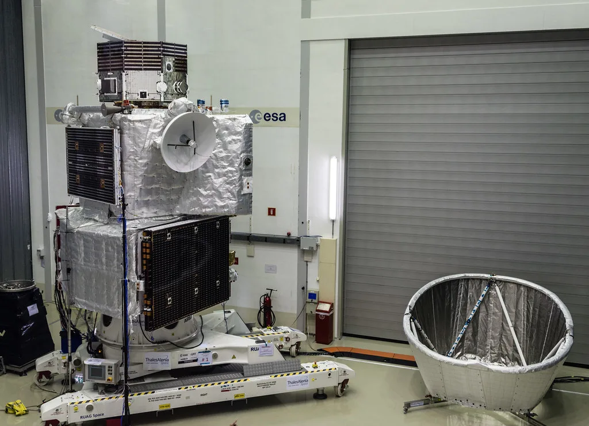
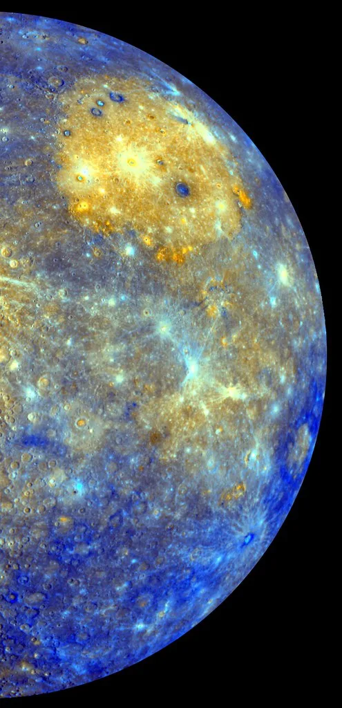

유럽우주국(ESA)과 일본 우주항공연구개발기구(JAXA)가 함께 만든 수성 탐사선 '베피콜롬보'가 마침내 수성 궤도에 들어섰다. 외신 보도에 따르면 두 기관은 현지시간 21일 탐사선이 수성 궤도 진입에 성공했다고 확인했다. 2018년 지구를 떠난 지 약 8년 만이다. 태양에 가장 가까운 행성인 수성을 도는 탐사선이 생긴 것은 미국 항공우주국(NASA)의 메신저호가 임무를 마친 뒤 10여 년 만의 일이다.
도착까지의 길은 순탄하지 않았다. 베피콜롬보는 원래 2025년 12월 수성에 닿을 예정이었다. 그러나 2024년 태양전기추진 장치에 전력 관련 이상이 생겨 낼 수 있는 추력이 제한됐고, 이 때문에 궤도를 다시 설계하면서 도착 시점이 2026년 11월로 미뤄졌다. 탐사선은 그동안 지구와 금성, 수성 곁을 여러 차례 스쳐 지나가며 행성의 중력을 이용해 속도를 줄이는 방식으로 조금씩 수성에 다가갔다.

수성 탐사가 어려운 이유는 태양의 강력한 중력 때문이다. 수성으로 향하는 탐사선은 태양 쪽으로 떨어지면서 속도가 계속 빨라지기 때문에, 행성에 붙잡히려면 오히려 엄청난 감속이 필요하다. 여기에 태양에 가까울수록 높아지는 열과 방사선도 견뎌야 한다. 베피콜롬보가 먼 길을 돌아가며 수많은 근접 비행을 거친 것도 이런 물리적 제약을 극복하기 위해서였다. 연료를 한꺼번에 태워 속도를 줄이는 대신 행성 중력과 전기추진을 조합해 오랜 시간에 걸쳐 감속하는 전략을 택한 셈이다. 수성 궤도에 안착한 탐사선이 지금까지 극소수에 불과한 것도 이 때문이다.
베피콜롬보는 사실 두 대의 궤도선이 한 몸으로 묶인 구조다. ESA가 맡은 수성 행성 궤도선(MPO)은 표면과 내부 구조를, JAXA가 맡은 수성 자기권 궤도선 '미오'는 수성을 둘러싼 자기장과 주변 환경을 주로 연구한다. ESA가 미리 공개한 일정에 따르면 두 궤도선은 12월 9~10일께 서로 분리돼 각자의 관측 궤도로 향하고, 정식 과학 관측은 2027년 4월부터 시작된다.

과학계의 기대는 크다. 수성은 크기에 비해 철로 된 핵이 유난히 크고, 지구처럼 자체 자기장을 지닌 몇 안 되는 암석 행성이다. 앞서 메신저호는 극지방 그늘진 분화구에 얼음이 있을 가능성을 보여 주는 등 여러 수수께끼를 남겼다. 두 궤도선이 서로 다른 위치에서 동시에 관측하면 수성의 형성 과정과 자기장의 기원, 태양풍과의 상호작용을 한층 입체적으로 파악할 수 있을 것으로 기대된다.
이번 임무는 국제 협력의 상징적 사례로도 평가된다. 유럽과 일본이 각자 강점을 지닌 분야를 나눠 맡아 하나의 탐사선으로 결합한 방식은 대형 우주 탐사의 비용과 위험을 나누는 모델로 꼽힌다. 탐사선 이름은 수성 궤도 연구와 근접 비행 기법에 기여한 이탈리아 과학자 주세페 '베피' 콜롬보에서 따왔다. 장기간 이어진 공동 개발과 운용 경험은 앞으로의 행성 탐사 협력에도 밑거름이 될 전망이다.
남은 관문도 적지 않다. 궤도 진입 이후에도 두 궤도선의 분리와 궤도 조정, 장비 점검이 차례로 이어져야 하고, 극한의 열 환경 속에서 장비가 제대로 작동하는지도 확인해야 한다. 궤도 진입 확인은 주로 외신 보도를 통해 전해진 만큼, 앞으로 두 기관이 내놓을 공식 발표와 첫 관측 자료에 관심이 모인다.